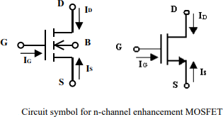
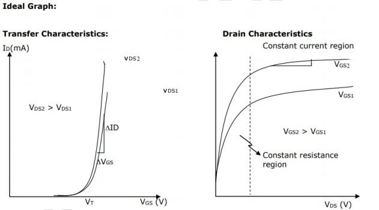
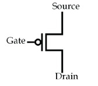
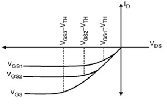
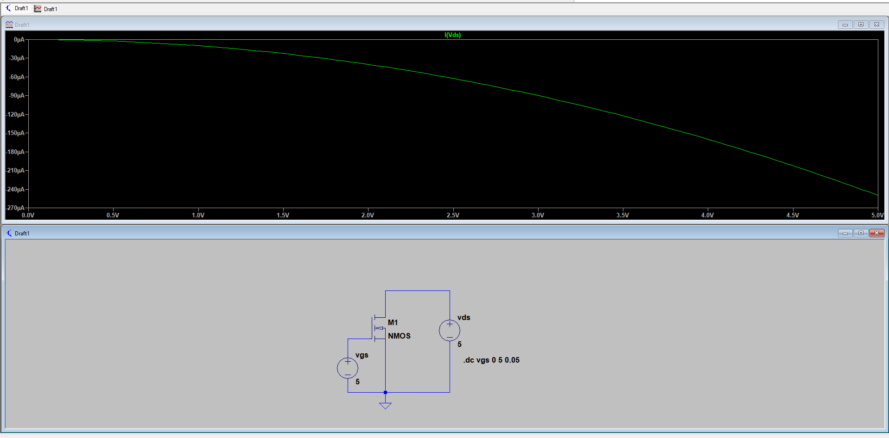
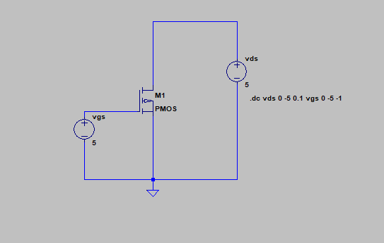
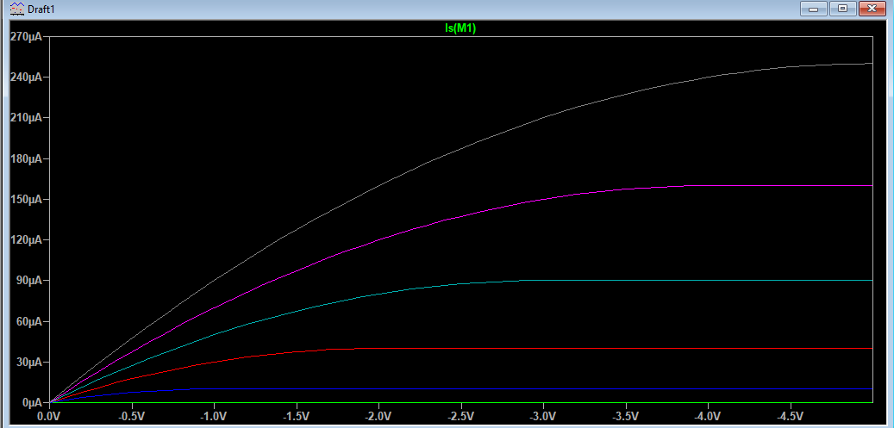

Experiment No. 01
To simulate schematics of NMOS and PMOS transistor using LT Spice .
OBJECTIVE: To simulate the schematic of the NMOS and PMOS transistor
SOFTWARE: Electric VLSI , LT Spice
THEORY: The MOSFET is actually a four-terminal device, whose substrate, or body terminal must be always held at one of the extreme voltage in the circuit, either the most positive for the PMOS or the most negative for the NMOS. One unique property of the MOSFET is that the gate draws no measurable current (IG=0).
Current flow between the source and drain terminals is controlled by the voltage VGS applied between the gate and source terminals. If the gate-to-source voltage VGS < VT no current can flow between the source and the drain – i.e. the transistor is OFF; if VGS > VT, then current can flow between the source and the drain
– i.e. the transistor is ON. The circuit symbol for an n-channel enhancement-mode (VT > 0 Volts) MOSFET is shown in Figure, along with the terminal current reference directions.

In the ON state, the current IDS flowing from the drain to the source will depend on the potential difference VDS between the drain and the source: IDS increases with increasing drain-to-source voltage VDS as long as the drain voltage is at least VT below the gate voltage, i.e as long as (VGS- VT) > VDS. When VDS increases above (VGS- VT), IDS saturates at a constant value. V-I operating curves for a typical n-channel enhancement-mode Field Effect Transistor (FET). As can be seen in the figure, for each value of VGS there is a unique curve of IDS Vs VDS.

The PMOS transistor or P-channel metal oxide semiconductor is a kind of transistor where the p-type dopants are utilized in the channel or gate region. This transistor is exactly the reverse of the NMOS Transistor. These transistors have three main terminals; the source, the gate & the drain where the transistor’s source is designed with a p-type substrate, and the drain terminal is designed with an n-type substrate. In this transistor, the charge carriers like holes are responsible for the conduction of current. The PMOS transistor symbols are shown below.

PMOS Transistor Symbol
The PMOS transistor I-V characteristics are shown below. These characteristics are divided into two regions in order to obtain the relationship between the drain to source current (I DS) as well as its terminal voltages like linear & saturation regions.
In a liner region, the IDS will linearly increase when the VDS (drain to source voltage) is increased whereas in the saturation region, the I DS is stable & it is independent of VDS. The main relationship between the ISD (source to drain current) & its terminal voltages is derived by a similar procedure of the NMOS transistor. In this case, the only change will be the charge carriers present within the inversion layer are simply holes. When the holes move from source to drain then the flow of current is also the same.

PMOS Transistor I-V Characteristics
PROCEDURE:
Open LT Spice
In Files Menu---click on new schematics
Go to Components---Select each required component----do connections.
Simulate edit command : add required voltage level
Simulate the schematic --- in Tools menu ----go to Simulation.
LT Spice window gets opened. There Right click on the black window---click on add trace.
OUTPUT:
NMOS:

PMOS:


CONCLUSION:
The schematics of NMOS and PMOS transistors were successfully simulated using LTspice. The simulation helped in understanding the operating characteristics and switching behavior of both types of MOSFETs. The voltage and current waveforms obtained from the simulation verified the basic principles of NMOS and PMOS operation, including their dependence on gate, source, and drain voltages. The results demonstrate that LTspice is an effective tool for analyzing and designing transistor-based circuits before practical implementation.